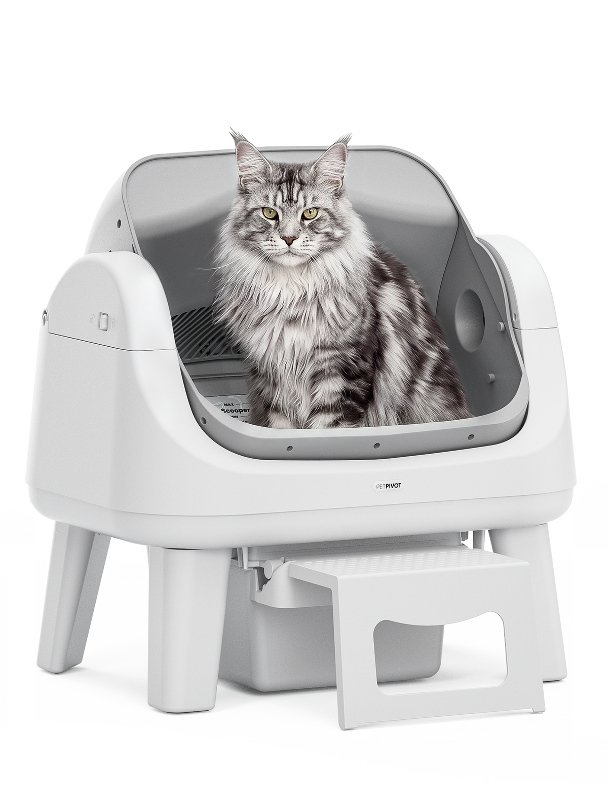

P0 · 严重度88
售后信任会直接影响高意向成交。
问题 1：低价硬件的长期可靠证据不足。
证据
Trustpilot 2/5，Cats.com construction 3/5，Reddit 有异味、维护和故障讨论。
影响
用户会把 PetPivot 看成低价试错，而不是可长期使用的家庭设备。
先修
30 天内重做 warranty、FAQ、troubleshooting、long-term review 和故障处理路径。
PetPivot 已经把 $149-$199 自动猫砂盆卖出规模，下一阶段先补长期可靠、售后响应和多渠道价格信任，再继续放大 TikTok Shop 与 Amazon。

公开披露显示 PetPivot 2025 年美国销量超过 300,000 台，官网也有 1M+ units sold 的规模表达。这个阶段不再按冷启动看；接下来要把“能卖出去”升级为“用户敢长期用、愿意复购耗材、愿意推荐”。
按 300,000+ 美国销量和 $149-$179 主销价粗算，2025 美国零售销售额底线约 USD 45M-54M，约 RMB 3.0-3.7 亿。该数值用于阶段校准，不等同净收入或财务审计。
下一关要证明低价不牺牲安全、耐用、除臭、猫适应和售后响应。否则增长会被差评、退款和渠道价格拖住。
PetPivot 靠 $149-$199 的自动清理门槛成立，最先打中的用户是多猫、老人、行动不便、租房和小空间家庭。大众外扩前必须让他们相信这台机器能稳定用超过一个促销周期。
这群人要少铲屎、少异味、少学习成本，也不想为 app、健康监测和高端外观多付 $400-$700。
这类用户愿意为省力付费，但会更在意入口高度、安全传感器、售后换修和长期清洁成本。
这群人会对比 Litter-Robot、PETKIT 和 Neakasa。PetPivot 可以做价格替代，但不能用参数堆叠抢“智能中心”心智。
PetPivot 的公开增长证据集中在 TikTok Shop / affiliate、Amazon bestseller 信号和官网促销。Chewy 出现说明渠道外扩开始，但当前还不能把它看成稳定零售货架型品牌。
置信度：中等偏低。原因是有 300k+ 美国销量和历史 TikTok Shop GMV 信号，但缺少 Seller Central、TikTok Shop 后台、官网订单和 Chewy sell-out。
TikTok 负责低价爆点和 affiliate 铺量，Amazon 负责高意向成交和评论资产，官网负责解释为什么低价仍可靠。现在最需要修的是三个渠道讲同一套信任标准：保修、退换、耐用、适用猫型和清洁周期。
用户最大入口仍是 automatic litter box / self-cleaning litter box 这类行业词，之后才进入低价替代、竞品比较和品牌复核。PetPivot 已经能接住 TikTok coupon 和品牌词流量，薄弱点集中在 comparison、long-term review、warranty 和 support 类入口。
automatic litter box、self-cleaning litter box。需求最大，但强榜单和媒体入口更偏向 Litter-Robot、Neakasa、PETKIT 等成熟品牌。
PetPivot vs Litter-Robot、Neakasa M1、cheap automatic litter box。购买意图最接近成交，目前缺少集中对比页和长期使用证据。
PetPivot、AutoScooper、PIVOTNOW。官网、Amazon、TikTok 和 YouTube 都有公开结果，能承接已有认知。
PetPivot reviews、refund、warranty、stopped working。量级小于行业词，但会影响临门一脚。
| 搜索入口 | 用户真实意图 | 现在接得怎样 | 经营动作 |
|---|---|---|---|
| “automatic litter box / self-cleaning litter box” | 先看品类榜单和主流品牌 | 半接住价格有吸引力，但媒体榜单和权威内容更偏成熟品牌。 | 补行业词 landing page：安全、除臭、猫适应、长期维护、价格理由一次讲清。 |
| “best automatic litter box under $200” | 找低价替代 | 半接住价格强，但需要补真实使用周期、清洁成本和售后承诺。 | 做 $149 价格页，直接对比 Litter-Robot、Neakasa 和 Amazon 低价款。 |
| “PetPivot review / problems” | 确认会不会坏、臭、难清理 | 没接牢Trustpilot 小样本负面显眼，Reddit 有维护和气味争议。 | 前置 warranty、退换、故障排查和 6 个月/12 个月 long-term review。 |
| “open top automatic litter box” | 猫能不能适应 | 接住了open-top 和 cat acclimation 是 PetPivot 最清楚的购买理由。 | 继续用猫适应、老年猫、多猫家庭做内容分层。 |
| “no app litter box” | 想要简单、不要 Wi-Fi 麻烦 | 接住了No app/no Wi-Fi 是差异点，但要避免被看成低配。 | 把 no app 翻译成 less setup、less failure points、easy for seniors。 |
PetPivot 的正向声音足够支撑首单转化，但 Trustpilot 2/5 的小样本、Reddit 的维护争议和专家评测里的 construction 低分，会影响谨慎型用户和高意向比较词。
2 / 5，15 reviews；回复 15% 负评，通常 2 周内。样本小，但会在品牌词搜索里放大售后疑虑。
主 ASIN 公开面显示 4.2 / 5，1,176 ratings；另一 ASIN 约 3.9 / 5，469 ratings。动销存在，评分不算稳。
整体 4.2 / 5，odor control 5/5，construction 3/5。对 PetPivot 最有用，也最尖锐。
正向集中在省事、便宜、开放式；负向集中在臭、维护、太小、机器故障和客服。
IMARC 估算全球 automatic self-cleaning cat litter box 2025 年约 USD 702.3M，北美占比超过 36.8%，对应北美约 USD 258M+。PetPivot 的公开 300k+ 美国销量说明它在低价段已经有份额，但现阶段仍是单品线驱动。
| 品线 | 北美市场天花板 | PetPivot 当前证据 | 阶段判断 | 经营结论 |
|---|---|---|---|---|
| AutoScooper 12 Lite / 11 | 北美自动猫砂盆约 USD 250M+ 级别，仍在增长 | 300k+ 美国销量，$149-$199 主销价，Amazon/TikTok/官网/Chewy 触点 | 主线成立 | 继续做主线，但必须把 reliability、warranty、odor 和 maintenance 证据做厚。 |
| 耗材 / liner / mat | 依赖设备保有量和复购频率 | Amazon 已有 litter pad / liner 等配件露出，官网有 consumables 入口 | 未成复购柱 | 先做设备注册、耗材提醒和售后场景，不要只靠一次性机器销售。 |
| 下一代智能款 | 高端智能猫砂盆由 Litter-Robot、PETKIT、Neakasa 主导 | 当前 PetPivot 核心叙事是 no app / no Wi-Fi，不是智能监测 | 暂不抢高端 | 高端智能不是 90 天主战场；先证明低价可靠，再决定是否上智能线。 |
自动猫砂盆用户最怕夹猫、误触发和传感器失灵。
自动清理如果控味弱，用户会觉得不如手动清理。
开放式是优势，但仍要教用户如何过渡。
低价硬件必须证明不是几个月后出故障。
高客单宠物设备一旦坏，客服响应直接影响品牌信任。
以下权重是公开样本方向性权重，来自评测、Amazon/Trustpilot/Reddit 主题、竞品页面和品类购买逻辑归纳，不是统计抽样。
用户会先看传感器、故障、保修和 6-12 个月表现。
做得差：安全 claim 有，但公开口碑和第三方评测仍让耐用、故障和支持成为疑虑。
用户要确认省事是否真的成立。
勉强及格：省事和控味有正向声音，但 Reddit 与评测指出维护和废物集中问题。
从传统猫砂盆过渡，是 PetPivot 的真实强项。
做得好：open-top、大入口和低学习成本比封闭桶式更容易被猫接受。
低价是最直接的购买理由。
做得好：价格显著低于 Litter-Robot、PETKIT 和 Neakasa，但不能只靠折扣解释价值。
用户想简单，但不能被理解成低配。
做得好但要升级表达：把 no app 讲成 fewer setup steps、fewer failure points 和 senior-friendly。
PetPivot 北美已经跨过单品验证，低价自动猫砂盆有明确需求和渠道入口。下一阶段最拖累增长质量的是低价硬件的长期可信度：耐用、异味、维护、保修和客服必须被前置证明。
PDP、Amazon、官网、YouTube long-term review 和 FAQ 要同步回答坏了怎么办、多久换、怎么清洁、哪些猫不适合。
TikTok Shop 负责爆点，Amazon 负责高意向成交，官网负责信任和注册，Chewy 负责零售背书。
耗材、liners、mats、warranty registration 和清洁提醒要进入 DTC 体系，否则 300k+ 设备保有量不会沉淀为用户资产。
规模和低价心智成立，但 Trustpilot、Reddit 和耐用证据让品牌信任不够稳。
做得好的：300k+ 美国销量、1M+ sold、open-top 和 no app 定位清楚。
做得差的：没有把“便宜但可靠”的证据讲成统一信任资产。
TikTok、Instagram、YouTube 铺量强，PIVOTNOW 和 creator affiliate 能带来转化入口。
做得好的：已有 133+ 近 30 天 creator publish 下限和历史 GMV 信号。
做得差的：内容还偏“省事+便宜”，长期可靠和售后证明不足。
Amazon 和官网能卖货，Chewy 开始出现，但交易页还没有把高意向用户的最后顾虑处理干净。
做得好的：$149-$199 价格、Amazon 评分和 Chewy 上架提供基本交易信号。
做得差的：保修、退换、故障排查、耗材复购和渠道价格解释不够前置。
售后信任会直接影响高意向成交。
Trustpilot 2/5，Cats.com construction 3/5，Reddit 有异味、维护和故障讨论。
用户会把 PetPivot 看成低价试错，而不是可长期使用的家庭设备。
30 天内重做 warranty、FAQ、troubleshooting、long-term review 和故障处理路径。
渠道价格会影响利润质量。
官网 $149/$179，Amazon 有 $129.99/$199.99 等价格信号，TikTok Shop 强转化，Chewy 正在上架。
用户会跨平台比价，品牌会被迫用折扣解释价值。
建立渠道价格地图：TikTok 做促销，Amazon 做成交，官网做注册和售后，Chewy 做信任货架。
一次性设备销售没有自然变成 LTV。
已有 liner、mat、耗材入口，但公开页面没有把复购节奏和设备保养讲清楚。
设备卖得越多，售后和维护问题越多；如果没有复购和注册，用户关系会留在平台手里。
90 天内上线设备注册、耗材提醒、清洁周期邮件和配件 bundle。
抢高端可靠、app 监测、长期品牌信任。PetPivot 要证明低价也能稳定用。
抢 open-top 中高端和 Amazon 评论资产。PetPivot 要守住低价 open-top 的价值解释。
抢智能、R&D、品牌年限和 U.S. support。PetPivot 不宜硬抢智能心智。
抢参数和更低价格。PetPivot 要用售后、评测和真实使用周期守住可信低价。
PetPivot 不需要马上变成高端智能宠物硬件。更现实的升级路径是把低价、简单、open-top 和 no app 变成可靠的家庭护理理由。
Automatic scooping without the smart-home headache.
An open-top, no-app litter box built for cats that want comfort and owners who want less daily cleanup.
Simple daily cleaning, clear safety sensors, and support you can reach when something goes wrong.
Find the AutoScooper that fits your cat.
保 TikTok Shop、Amazon 高意图词、AutoScooper 主 PDP 和 creator retargeting。
投 long-term review、comparison page、warranty 页面、故障排查和真实清洁周期内容。
测试 Chewy sell-out、设备注册、耗材提醒、liner/mat bundle 和邮件复购。
只讲便宜、省事、开箱的 creator 内容先收缩；没有评论质量和复用价值就不加码。
Owner：客服 / 电商 / 内容。
重写 warranty、return、FAQ、troubleshooting、清洁周期和猫适应指南；Amazon 与官网同步。
Owner：Marketing / Amazon。
把 creator 内容按安全、异味、维护、cat fit、售后解释打分，筛出能进 ads 和 PDP 的素材。
Owner：DTC / CRM / 渠道。
上线设备注册、耗材提醒、配件 bundle、Chewy sell-out 看板和售后反馈回流。
这些部门直接影响退款、差评、预算判断和用户留存。
最差点：公开负评回复率低，故障和退款解释不够前置。
最差点：看不到渠道 GMV、复购、退款率和 creator 复投标准。
最差点：长期可靠、清洁维护和耗材复购没有形成硬证据。
最差点：官网交易页没有充分处理售后、保修、退换和对比顾虑。
基础存在，但继续加码前要先定验收指标。
最差点：声量强，但证明内容还不够回答长期使用风险。
最差点：规模和定位有基础，但信任口碑不够稳。
最差点：多渠道价格、售后和库存节奏需要统一。
这部分已经给北美增长提供了明确入口。
最差点：素材很多，但需要用复投标准筛出能解释安全、耐用和售后的内容。
Trustpilot 小样本很差，Reddit 有具体负面体验；如果官网不主动解释售后和故障处理，搜索会放大风险。
TikTok Shop 和 Amazon 可以驱动成交，但如果官网不掌握注册、售后和耗材复购，用户关系留在平台。
缺少 TikTok Shop 后台、Amazon Seller、官网 GMV、Chewy sell-out、退款率、复购率和故障率。
| ID | 来源 | 日期 | 关键事实 | 支持判断 |
|---|---|---|---|---|
| E1 | PetPivot 官网首页 | 2026-06-15 | 官网显示 Over 1 million sold，主推 AutoScooper，支持和政策入口完整。 | 品牌规模、主线品类和 DTC 角色。 |
| E2 | AutoScooper 12 Lite PDP | 2026-06-15 | AutoScooper 12 Lite 美国站 sale price $149，regular price $179.99。 | 价格带和低价价值判断。 |
| E3 | AutoScooper collection | 2026-06-15 | AutoScooper 12 Lite $149，AutoScooper 11 $179，多个颜色和评分露出。 | 品线结构和单品集中。 |
| E4 | GlobeNewswire | 2026-01-15 | 披露 2025 年美国销量 300,000+，TikTok 和 Amazon bestseller 12 个月。 | 北美规模底线和阶段判断。 |
| E5 | Amazon B0D8J5796M | 2026-06-15 | Open-top automatic litter box，安全传感器，10L waste bin；公开面显示 4.2 / 5 和 1,176 ratings。 | Amazon 动销和核心卖点。 |
| E6 | Amazon B0GL7Q6YXZ | 2026-06-15 | 另一 PetPivot ASIN 显示 3.9 / 5，469 ratings，other sellers from $199.99。 | 评分波动和价格一致性风险。 |
| E7 | Chewy AutoScooper 12 Lite | 2026-06-15 | Chewy 页面显示自动清理、front entry step、16.33 x 15.35 inch 入口和 3-22 lb cat fit。 | 零售货架和适用人群。 |
| E8 | Trustpilot PetPivot | 2026-06-15 | TrustScore 2 / 5，15 reviews，回复 15% 负评，通常 2 周内。 | 声誉和客服售后扣分。 |
| E9 | Cats.com Review | 2026-06-15 | Overall 4.2 / 5，odor control 5/5，construction 3/5，并提到耐用、噪音和 open-top 常见顾虑。 | VOC、可靠性和卖点匹配。 |
| E10 | The Gadgeteer Review | 2026-06-15 | 评测提到 open-top、传感器、按钮/说明复杂、废物集中和猫适应挑战。 | 安装、维护和 cat-fit 风险。 |
| E11 | IMARC Market Outlook | 2026-06-15 | 全球 automatic self-cleaning cat litter box 2025 年 USD 702.3M，北美占比超过 36.8%。 | 市场天花板校准。 |
| E12 | Neakasa M1 Amazon | 2026-06-15 | Neakasa M1 Plus $399.99，4.0 / 5，3,715 ratings。 | 竞品价格和 review pressure。 |
| E13 | Litter-Robot 4 | 2026-06-15 | Litter-Robot 主打 app、SmartScale、odor control、multi-cat 和 1.8M+ users。 | 高端竞品心智。 |
| E14 | PETKIT Amazon | 2026-06-15 | PETKIT 主打 12 年智能宠物硬件、U.S.-based support、7 infrared + 4 weight sensors。 | 智能与品牌年限压力。 |
| E15 | 本地 TideLens 公开采样数据 | 2026-06-15 | 近 30 天 creator publish 下限 133+，TikTok/Shop 64、Instagram 56、YouTube 13；历史 campaign creative 显示 GMV $3.5M+。 | 红人声量和渠道转化入口。 |